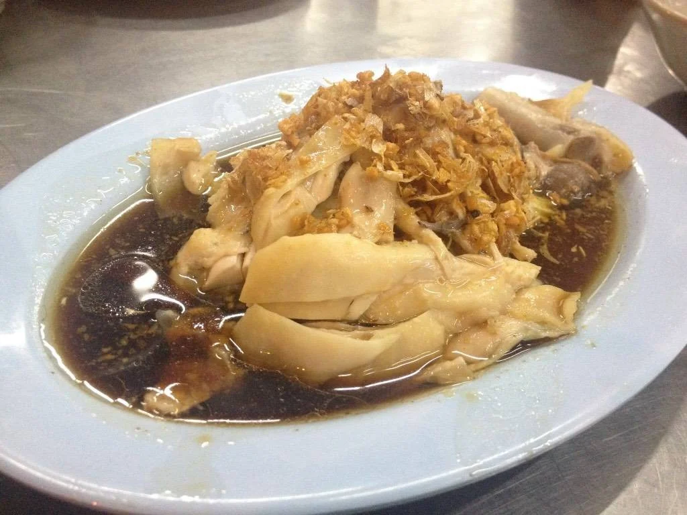
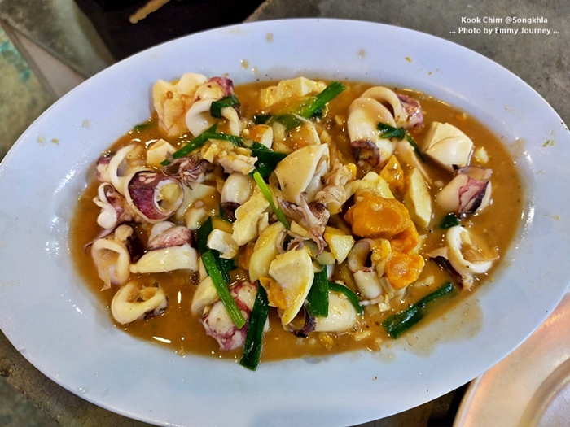

ทำไมต้องมาร้านนี้?
ร้านนี้เป็นร้านข้าวต้มที่มีอาหารหลากหลายมาก ไทย จีน ใต้ ครบรสจัดจ้าน ทำไว เสริฟ์ไว บริการไวมาก แม้คนจะเยอะแค่ไหน ถ้ามาสงขลายามค่ำคืน ร้านนี้ไม่ควรพลาด ร้านอยู่ในตัวเมืองสงขลา เมนูที่ไปแล้วต้องสั่งทุกโต๊ะ คือ ตีนไก่พะโล้ ซุปเปอร์ตีนไก่ อร่อยละลายในปาก ราคาไม่แพงด้วย